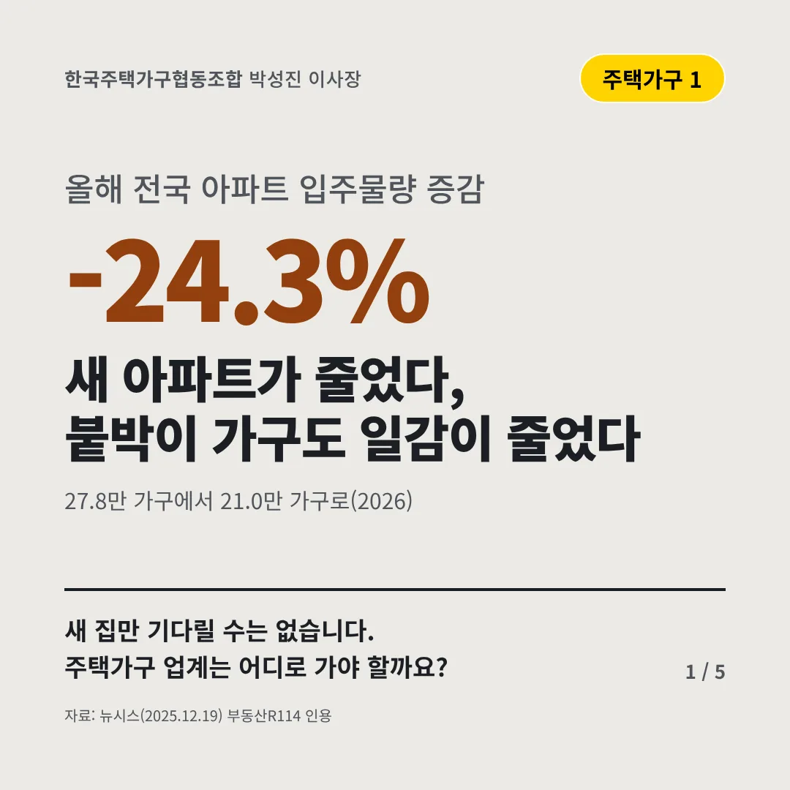
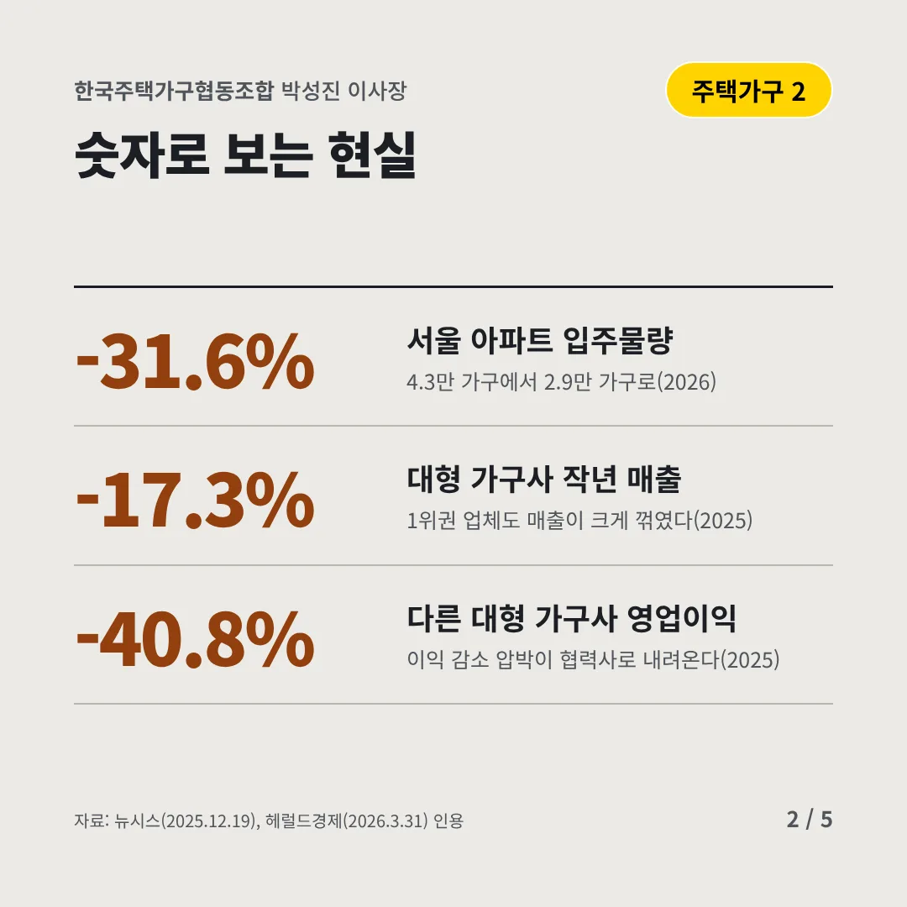
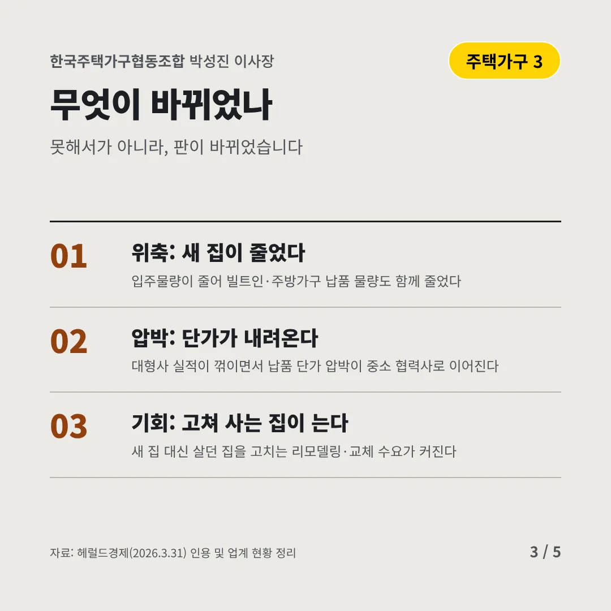
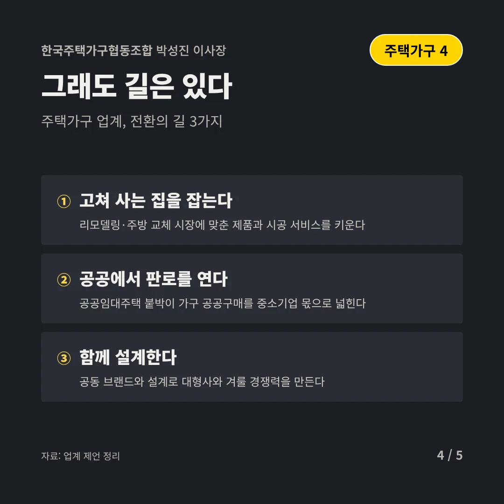
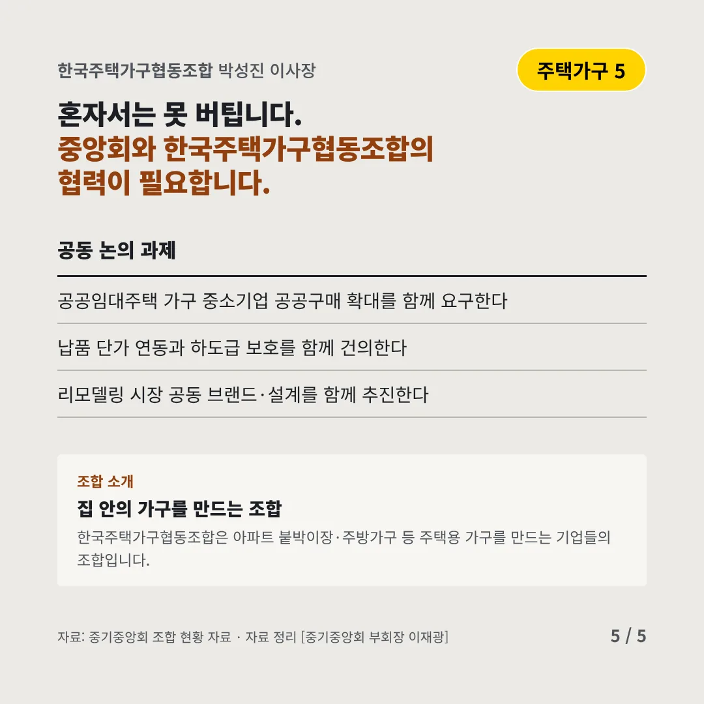
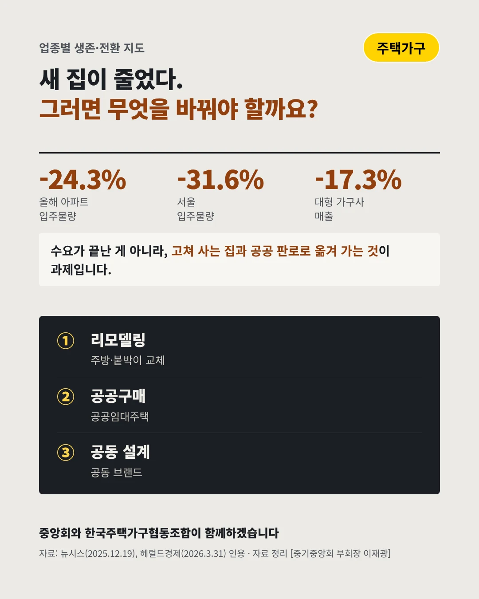

한국주택가구협동조합박성진 이사장
새 아파트가 줄었다, 붙박이 가구도 일감이 줄었다
-24.3% 올해 전국 아파트 입주물량 증감






새 집만 기다릴 수는 없습니다. 주택가구 업계는 어디로 가야 할까요?
숫자로 보는 현실
- -31.6%서울 아파트 입주물량4.3만 가구에서 2.9만 가구로(2026)
- -17.3%대형 가구사 작년 매출1위권 업체도 매출이 크게 꺾였다(2025)
- -40.8%다른 대형 가구사 영업이익이익 감소 압박이 협력사로 내려온다(2025)
무엇이 바뀌었나
- 위축: 새 집이 줄었다입주물량이 줄어 빌트인·주방가구 납품 물량도 함께 줄었다
- 압박: 단가가 내려온다대형사 실적이 꺾이면서 납품 단가 압박이 중소 협력사로 이어진다
- 기회: 고쳐 사는 집이 는다새 집 대신 살던 집을 고치는 리모델링·교체 수요가 커진다
그래도 길은 있다
- 고쳐 사는 집을 잡는다리모델링·주방 교체 시장에 맞춘 제품과 시공 서비스를 키운다
- 공공에서 판로를 연다공공임대주택 붙박이 가구 공공구매를 중소기업 몫으로 넓힌다
- 함께 설계한다공동 브랜드와 설계로 대형사와 겨룰 경쟁력을 만든다
한 장 요약

조합 소개
한국주택가구협동조합은 아파트 붙박이장·주방가구 등 주택용 가구를 만드는 기업들의 조합입니다.
자료: 뉴시스(2025.12.19), 헤럴드경제(2026.3.31)